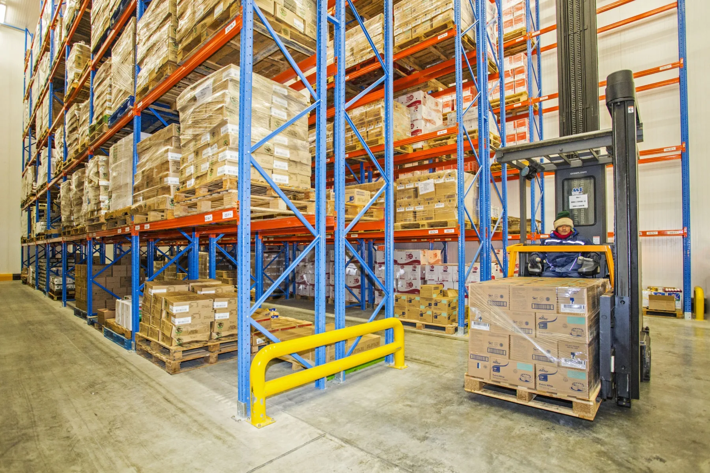
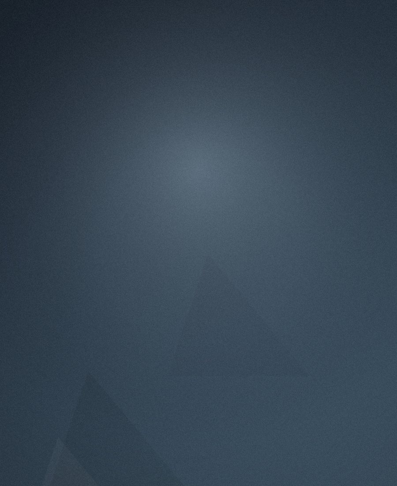

Distribution centre · DohaSince 1997, Al Majid Jawad has grown into one of Qatar’s most trusted houses of food & beverage — from the warehouse to the table, and into the country’s most-loved restaurants.
A comprehensive portfolio, built to satisfy every food & beverage requirement of Qatar’s most demanding market.
What began as a focused distribution venture has, over nearly three decades, become a fully integrated operation — spanning world-class FMCG brands, state-of-the-art warehousing, a nationwide cold-chain fleet, and a growing family of international restaurants.
Our success rests on four enduring commitments: the quality of the products we represent, the standard of our facilities, the reliability of our logistics, and the care of our people. We never compromise on any of them.
Today AMJ serves thousands of customers across hypermarkets, HORECA, wholesale, catering and institutions — delivering on time, every time, in every corner of the State of Qatar.
To be recognised as the leading distributor of world-class food & beverage brands in Qatar — the partner of choice for principals and customers alike, known for integrity, reliability and an uncompromising standard of service.
To satisfy every food & beverage requirement of our market through a comprehensive portfolio, modern infrastructure and outstanding service — while growing the international restaurant brands our communities love.
“When we opened our doors in 1997, we made a simple promise: to bring the world’s finest food & beverage brands to Qatar, and to stand behind every one of them. Nearly three decades on, that promise still guides every decision we make.”
“Our growth has never been about scale for its own sake. It has been about earning trust — of the principals who hand us their brands, and of the customers who rely on us, day after day.”

Managing Director“Our infrastructure — modern warehousing, an extensive temperature-controlled fleet, and HACCP-certified processes — exists for one reason: so that quality reaches our customers exactly as our principals intended.”
“As we look ahead, we continue to invest in our people, our facilities and our partnerships, ensuring AMJ remains the most dependable name in Qatar’s food & beverage trade.”